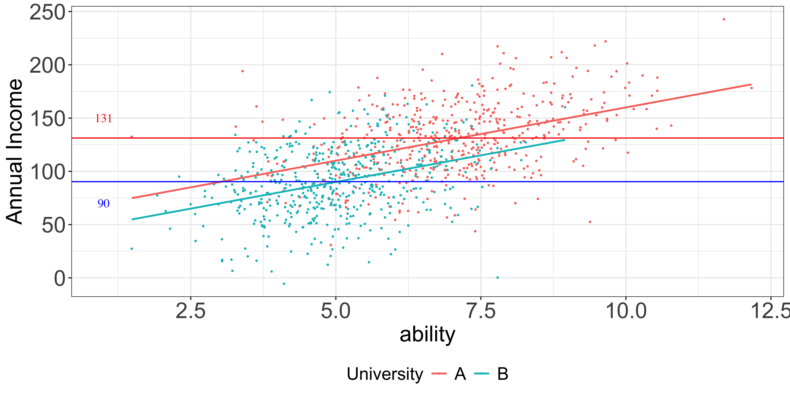
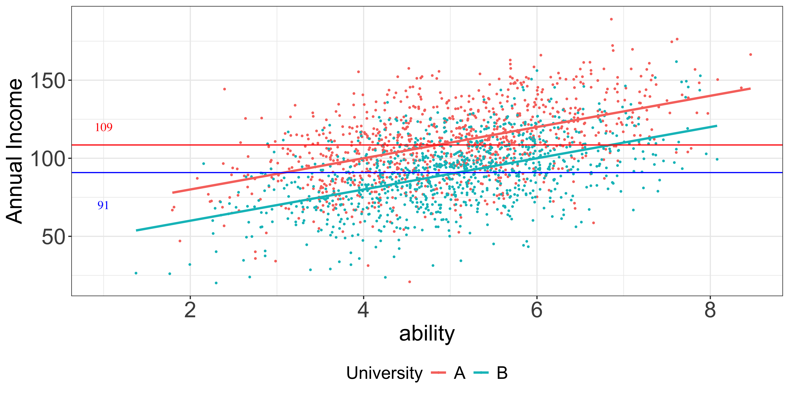

01-1: Univariate Regression: Introduction
Univariate Regression: Introduction
Population, Sample, and Econometrics
Definition
A set of \(ALL\) individuals, items, phenomenon, that you are interested in learning about
Example
- Suppose you are interested in the impact of eduction on income across the U.S. Then, the population is all the individuals in U.S.
- Suppose you are interested in the impact of water pricing on irrigation water demand for farmers in NE. Then, your population is all the farmers in NE.
Important
Population differs depending on the scope of your interest
If you are interested in understanding the impact of COVID-19 on child education achievement at the global scale, then your population is every single kid in the world
If you are interested in understanding the impact of COVID-19 on child education achievement in U.S., then your population is every single kid in U.S.
Definition
Sample is a subset of population that you observe
- Population: you are interested in the impact of education on wage
- Sample (example): data on education, income, and many other things for 300 individuals from each State
Question
Is the sample representative of the population?
- Population: you are interested in the impact of water price on irrigation by farmers in Nebraska
- Sample (example): data on water price, irrigation water use, and many other things for 500 farmers who farm in the Upper Republican Basin (southwest corner of NE)
Question
Is the sample representative of the population?
Simple univariate model
Consider a phenomenon in the population that is correctly represented by the following model ( This is the model you want to learn about using sample ):
\[\begin{equation} y=\beta_0+\beta_1 x + u \end{equation}\]- \(y\): to be explained by \(x\) ( dependent variable)
- \(x\): explain \(y\) ( independent variable , covariate , explanatory variable )
- \(u\): parts of \(y\) that cannot be explained by \(x\) ( error term )
- \(\beta_0\) and \(\beta_1\): real numbers that gives the model a quantitative meaning ( parameters )
Important
You will never know the true model. You can try estimating it using sample! That is what statistics is about.
\[\begin{align}
y=\beta_0+\beta_1 x + u
\end{align}\]
If you change \(x\) by \(1\) unit while holding \(u\) (everything else) constant,
\[\begin{align} y_{before} & = \beta_0+\beta_1 x + u \\ y_{after} & = \beta_0+\beta_1 (x + 1) + u \end{align}\]The difference in \(y_{before}\) and \(y_{after}\),
\[\begin{align} \Delta y = \beta_1 \end{align}\]That is, \(y\) changes by \(\beta_1\).
So,
- \(\beta_1\) is the change in \(y\) when \(x\) increases by 1
- We call \(\beta_1\) the ceteris paribus (with everything else fixed) causal impact of \(x\) on \(y\).
\[\begin{align}
y=\beta_0+\beta_1 x + u
\end{align}\]
When \(x = 0\) and \(u=0\),
\[\begin{align} y=\beta_0 \end{align}\]So, \(\beta_0\) represents the intercept.
- \(\beta_0\): intercept
- \(\beta_1\): coefficient (slope)
Why do we want ceteris paribus causal impact?
Quality of College
You
- have been admitted to University A (better, more expensive) and B (worse, less expensive)
- are trying to decide which school to attend
- are interested in knowing a boost in your future income to make a decision
You have found the following data
University | average income | sample size |
|---|---|---|
A | 130.13 | 500 |
B | 90.13 | 500 |
Question
Should you assume that the observed difference of 40 is the expected boost you would get if you are to attend University A instead of B?
Let’s say your ability score is \(6\) out of \(10\) (the higher, the better),
\[\mbox{(1)}\;\; E[inc|A,ability=9] -E[inc|B,ability=6]\] \[\mbox{(2)}\;\; E[inc|A,ability=6] -E[inc|B,ability=6]\]
Which one would like you to know?
Important
You want ability (an unobservable) to stay fixed when you change the quality of school because your innate ability is not going to miraculously increase by simply attending school A
You do not want the impact of school quality to be confounded with something else
Aside: Conditional Expectation
\(E[Y|X]\) represents expected value of \(Y\) conditional on \(X\) (For a given value of \(X\), the expected value of \(Y\)).
Note
- red line: \(E[income|A, ability]\)
- blue line: \(E[income|B, ability]\)

Example: corn yield and fertilizer
Corn yield and fertilizer
\[\begin{align} yield=\beta_0+\beta_1 fertilizer+u \end{align}\]Question
What is in the error term?
\[\begin{align}
yield=\beta_0+\beta_1 fertilizer+u
\end{align}\]
- you do not know \(\beta_0\) and \(\beta_1\), and would like to estimate them
- you observe a series of \(\{yield_i,fertilizer_i\}\) combinations \((i=1,\dots,n)\)
- you would like to estiamte \(\beta_1\), the impact of fertilizer on yield, ceteris paribus (with everything else fixed)
Question
How could we possibly find the ceteris paribus impact of fertilizer on yield when we do not observe whole bunch of other factors (error term)?
It turns out we can identify the ceteris paribus causal impact of \(x\) on \(y\) as long as the following condition is satisfied:
Zero conditional mean
\(E(u|x) = 0\)
This is satisfied when \(E[u|x]=E[u]\) and \(E[u] = 0\). Practically (and roughtly) speaking, this condition is satisfied if
Important
- the error term (\(u\)) is not correlated with \(x\)
- an intercept (\(\beta_0\)) is included in the model (which we almost always do by default)
Model
\[\begin{align} yield=\beta_0+\beta_1 fertilizer + u \end{align}\]Data
You have collected farm-level yield-fertilizer data from 200 farmers in year 2023.
Questions
- What’s in \(u\)? (note that factors that do not affect yield are not part of \(u\))
- Is it correlated with fertilizer?
Definition: Mean Independence
\(E[u|x]=E[u]\)
verbally: the average value of the error term (collection of all the unobservables) is the same at any value of \(x\), and that the common average is equal to the average of \(u\) over the entire population
(almost) interchangeably: the error term is not correlated with \(x\)
Mean independence of \(u\) and \(x\) implies no correlation. But, no correlation does not imply mean independence.
\[\begin{aligned} Cov(u,x)= & E[(u-E[u])(x-E[x])] \\\\ = & E[ux]-E[u]E[x]-E[u]E[x]+E[u]E[x]\\\\ = & E[ux] \\\\ = & E_x[E_u[u|x]] \;\; \mbox{(iterated law of expectation)} \end{aligned}\]If zero conditional mean condition \((E(u|x)=0)\) is satisfied,
\[\begin{aligned} Cov(u,x)= & E_x[0] = 0 \end{aligned}\]Expected value of the error term is 0 \((E(u)=0)\).
This is always satisfied as long as an intercept is included in the model:
\[y = \beta_0 + \beta_1 x + u_1,\;\; \mbox{where}\;\; E(u_1)=\alpha\]
Rewriting the model,
\[\begin{aligned} y & = \beta_0 + \alpha + \beta_1 x + u_1 - \alpha \\\\ & = \gamma_0 + \beta_1 x + u_2 \end{aligned}\]where, \(\gamma_0=\beta_0+\alpha\) and \(u_2=u_1-\alpha\).
Now, \(E[u_2]=0\).
Going back to the college-income example
The model
\[ Income = \beta_0+\beta_1 College\;\; A + u \]
where \(College\;\; A\) is 1 if attending college A, 0 if attending college B, and \(u\) is the error term that includes ability. \(u\) includes ability.
Zero conditional mean satisfied?
\[ E[u(ability)|college A] = 0? \]
That is, are attending college A and ability (correlate) systematically related with each other? Or, is college choice (and acceptance of course) correlated with ability?

This is what it would like if college choice and ability are not correlated:

Exercise
- consider a phenomenon you are interested in understanding
- dependent variable (variable to be explained)
- explanatory variable (variable to explain)
- construct a simple linear model
- identify what is in the error term
- check if they are correlated withe explanatory variable or not